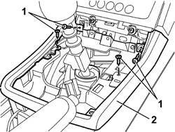
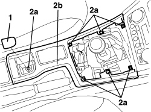
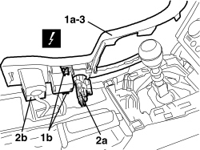

7040L23 TRIM ON TUNNEL COVER - R.R.
- Path
- Procedures > 70 FITTINGS > 7040 BODY INTERIOR FITTINGS AND TRIM > 7040L PASSENGER COMPARTMENT FLOOR COVERING > 7040L23 TRIM ON TUNNEL COVER - R.R.
- Kind
- repair procedure (removal / refitting; the operation number is the code)
- Applies to
- all engines; all production periods
- Interactive page
- https://sloeber94.github.io/elrnDB-aBrrSpdr/en/#/946002646
Applies to: all engines; all production periods
 Removing
Removing
 Refitting
RefittingRemove the left and right seats.
Op. 7045A10 FRONT SEAT (ONE), LEFT OR RIGHT - R.R.
Op. 7040L37 GEAR LEVER TRIM - R.R
Op. 3380A44 HANDBRAKE/LINKAGE PROTECTION - R+R
Op. 7040L20 TUNNEL COVER - R.R
1. Undo the bolts.
2. Remove the surround.

Applies to: all engines; all production periods
Refitting
Removing- Check that the trim is not damaged.
- Fit the trim.
- Tighten the bolts.
Op. 7040L20 TUNNEL COVER - R.R
Op. 3380A44 HANDBRAKE/LINKAGE PROTECTION - R+R
Applies to: engines: 2.2 JTS, 3.2 JTS; all production periods; only with equipment: Spider
Removing
RefittingOp. 7040L37 GEAR LEVER TRIM - R.R
1. Remove the rubber cover.
2. Undo the trim (2b) fixing bolts (2a).

Applies to: engines: 2.2 JTS, 3.2 JTS; all production periods; only with equipment: Spider
1. Move the trim (1a) releasing the inner retainers (1b).
2. Disconnect the electrical connections (2a, 2b).
Description | Component |
|---|---|
CIGAR LIGHTER/CURRENT SOCKET | |
BOOT OPENING/CLOSING CONTROL |
3. Keep the trim on the tunnel cover.

Applies to: engines: 2.2 JTS, 3.2 JTS; all production periods; only with equipment: Spider
- If necessary, remove the following components.
Applies to: engines: 2.2 JTS, 3.2 JTS; all production periods; only with equipment: Spider
Refitting
Removing- Check that the trim on the tunnel cover is not damaged.
Op. 7040A57 FRONT ASHTRAY TRIM/SUPPORT - R.R.
Op. 7030H10 HOOD CONTROL SWITCH - R.R.
- Connect the electrical connections.
- Position the trim attaching the inner retainers.
- Tighten the trim fixing bolts.
- Position the rubber cover.
Topics linked from this page (8)
- 3380A44 HANDBRAKE/LINKAGE PROTECTION - R+R
- 7030H10 HOOD CONTROL SWITCH - R.R.
- 7040A57 FRONT ASHTRAY TRIM/SUPPORT - R.R.
- 7040L20 TUNNEL COVER - R.R
- 7040L37 GEAR LEVER TRIM - R.R
- 7045A10 FRONT SEAT (ONE), LEFT OR RIGHT - R.R.
- H130 HOOD OPENING/CLOSING CONTROL
- P050 CIGAR LIGHTER / CURRENT SOCKET
Topics that link to this page (24)
- 2125C30 GEAR ENGAGEMENT/SELECTION CABLES - R.R
- 2135A10 AUTOMATIC TRANSMISSION MANUAL CONTROL LEVER AND SUPPORT - R + R AND OVERHAUL
- 2135A12 GEAR ENGAGEMENT CABLE - R R
- 5010B24 UNDER-FACIA AIR DUCTS - R.R.
- 5010B49 TUNNEL CONSOLE GLOVE COMPARTMENT AIR DUCT - R. R.
- 5010B86 CENTRE CONSOLE COOLING DUCT - R.R.
- 5040C10 AIR CONDITIONING CASING - R.R
- 5040C50 AIR CONDITIONING HEATER RADIATOR - R.R.
- 5040C64 A/C EVAPORATOR - R+R
- 5040D80 AIR CONDITIONING SYSTEM CABLE LOOM - R.R. OR REPLACE
- 5040D86 AIR CONDITIONING RIGHT AIR MIXTURE FLAP CONTROL MOTOR - R.R
- 5040D94 AIR CONDITIONING LEFT UPPER AIR DISTRIBUTION FLAP MOTOR (DEFROST) - R.R
- 5040D96 AIR CONDITIONING RIGHT UPPER DISTRIBUTION FLAP MOTOR (DEFROST) - R.R
- 5505A68 CABLE LOOM FOR CONSOLE UNDER DASHBOARD AND/OR TUNNEL COVER - R.R. OR REPLACE
- 5505C31 BUILT-IN WIRING UNDER DASHBOARD - R.R.
- 5550D18 HANDBRAKE ON WARNING LIGHT SWITCH - R+R
- 5580C22 AIR BAG MODULE - PASSENGER SIDE - R.R
- 5580C24 PASSENGER SIDE AIR BAG MODULE SUPPORT R. R.
- 5580E34 CAR ANTI-THEFT DEVICE ANTI-LIFT SENSOR - R.R. FOLLOWING ELECTRICAL CIRCUIT CHECK
- 5580H12 PARKING OBSTACLE DETECTION DEVICE BUZZER - R.R.
- 7040A10 DASHBOARD TRIM - R+R
- 7040A89 REINFORCEMENT BRACKET BETWEEN DASHBOARD SUPPORTING CROSSMEMER AND BODYSHELL - R.R.
- 7040L74 TUNNEL TRIM MOUNTING BRACKET/SUPPORT - R.R.
- 7210A74 R R FACIA SUPPORT BEAM